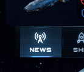
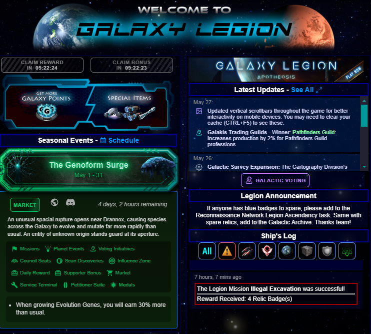
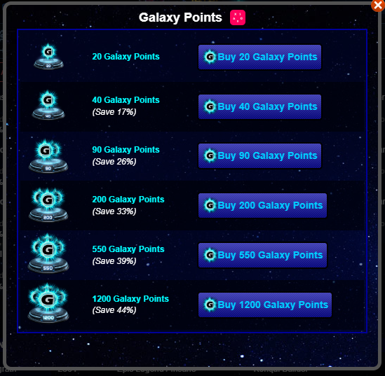
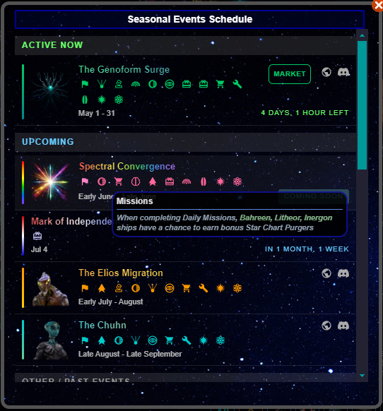
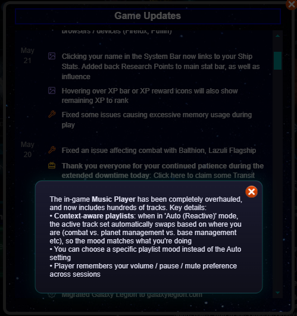

News Tab
Access this tab by clicking the button the image below

This tab displays general game information

The Daily Reward button
The Supporter Bonus button
The Galaxy Points purchase button
The Artifact Market button
The Seasonal Events Schedule button
The active Seasonal Event banners (if any Seasonal Events are active)
A link to Galaxy Legion: Apotheosis, the sequel game
A button to view all game updates
A section to view the most recent updates
The Galactic Voting button, which accesses Initiatives
The current Legion Announcement, where Legion leaders can post important updates
The Ship's Log, which includes many types of messages about your game
Galaxy Points Pop-Up
Clicking on the Galaxy Points displays a pop-up with various GP purchase options.

Seasonal Events Schedule Pop-Up
Clicking on the Schedule button displays a pop-up with the Seasonal Events schedule. This schedule lists the various Seasonal Events in the game, along with their timeframes. In addition, hovering over the icons can give more information about the features available during that Seasonal Event.

Seasonal Banners
You can expand these banners by clicking on them, which reveals more information about the Event.
Updates
This button displays the full list of game updates. Some updates have more lengthy information associated, which you can see by clicking on the updates. Further, you can click on any updates indicating a passing Initiative to see more information about the effect.

Ship's Log
This log contains various filter buttons. Click these buttons at the top to filter the type of messages seen.